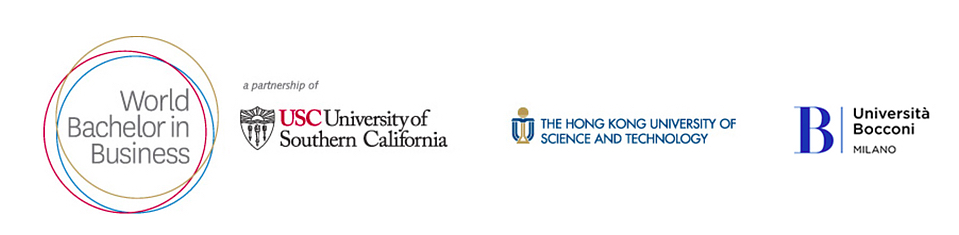
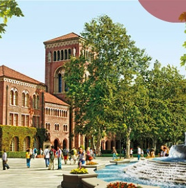
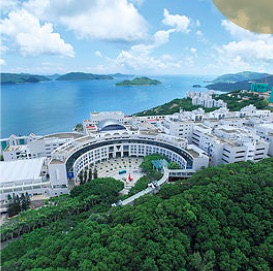
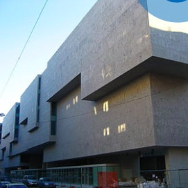
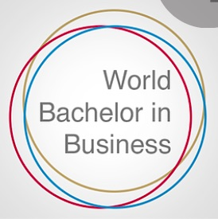
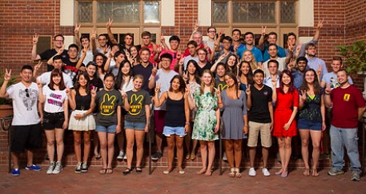
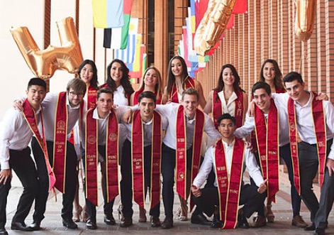

<!doctype html>
<html>

</html>
<meta charset="World-Bachelor-in-Business">
<meta name="viewport" content="width=device-width, initial-scale=1">
<link rel="stylesheet" href="/w3css/3/w3.css">

<style>
    * {
        box-sizing: border-box;
        position: relative;
    }
    /* Create two unequal columns that floats next to each other */
    
    .column {
        float: left;
        padding: 10px;
        height: 300px;
    }
    
    .left {
        width: 32%;
    }
    
    .right {
        width: 68%;
    }
    /* Clear floats after the columns */
    
    .row:after {
        content: "";
        display: table;
        clear: both;
    }
    /* Create two unequal columns that floats next to each other but different sizing allocation*/
    
    .column1 {
        float: left;
        padding: 10px;
        height: 300px;
    }
    
    .left1 {
        width: 50%;
    }
    
    .right1 {
        width: 50%;
    }
    /* Clear floats after the columns */
    
    .row1:after {
        content: "";
        display: table;
        clear: both;
    }
    /* Create three equal columns that floats next to each other */
    
    .column3 {
        float: left;
        width: 33.33%;
        padding: 10px;
        height: 300px;
    }
    /* Clear floats after the columns */
    
    .row3:after {
        content: "";
        display: table;
        clear: both;
    }
</style>
</head>

<body>

    <!-- Navigation -->
    <nav class="w3-bar w3-black">
        <a href="#thestudentexperience" class="w3-button w3-bar-item">The Student Experience</a>
        <a href="#admissions" class="w3-button w3-bar-item">Admissions</a>
        <a href="#tuition" class="w3-button w3-bar-item">Tuition</a>
        <a href="#scholarships" class="w3-button w3-bar-item">Scholarships</a>
        <a href="#wbbnews" class="w3-button w3-bar-item">WBB News</a>
        <a href="#contactus" class="w3-button w3-bar-item">Contact US</a>
    </nav>

    

    <h2 style="color:#990000" style="font-family:orig_nationalbook">
        <center>Three world-class universities. Three continents. Three degrees.</center>
    </h2>

    <h2 style="color:#990000" style="font-family:orig_nationalbook">
        <center>One unparalleled experience.</center>
    </h2>
    <h2 style="font-family:orig_nationalbook">Passport to Success</h2>
    <p style="font-family:orig_nationalbook">The World Bachelor in Business (WBB) partnership is a bold new direction in higher education. A cohort of 45 students from across the globe study at three highly regarded business schools, each in a major economic and cultural zone. At the end of
        four years, students have completed the coursework for all three universities, earning a bachelor’s degree from each institution.</p>
    <p style="font-family:orig_nationalbook">The WBB is the only undergraduate program of its kind, designed to engage intellectually curious and entrepreneurial students in a business curriculum that connects leading-edge teaching methods with cultural immersion and real-world experiences.
        Students become versed in the fundamentals of business in Asia, Europe and North America. With access to the resources of three research universities, students can expect rewarding opportunities for learning with internationally renowned teacher-scholars,
        as well as through research, activities and internships that give them access to companies and leaders making a global impact.</p>
    <h2 style="color: #DAA520;">Pursue a global itinerary. Multiply your assets.</h2>
    <p style="font-family:orig_nationalbook">This is an approach to education that global executives want, an approach that will prepare a new generation of leaders for the opportunities of an interconnected world. At the end of this journey, students are global citizens fluent in the language
        of international business and join alumni networks with nearly endless reach and influence.</p>

    <div class="row">
        <div class="column left" style="background-color: white;">
            <div class="image">
                
            </div>
        </div>
        <div class="column right" style="background-color: white;">
            <h1 style="font-family:orig_nationalbook">University of Southern California's</h1>
            <h1 style="font-family:orig_nationalbook">Marshall School of Business</h1>
            <h3 style="font-family:orig_nationalbook"> <i>Los Angeles, California</i></h3>
            <p style="font-family:orig_nationalbook">Students will begin their WBB education at the University of Southern California’s Marshall School of Business. Consistently ranked among the nation’s premier schools, USC Marshall is internationally recognized for its emphasis on entrepreneurship
                and innovation, social responsibility and path-breaking research. Its undergraduate programs emphasize experiential learning that nurtures entrepreneurial talent and critical-thinking skills. Located in Los Angeles, USC Marshall is integrally
                connected to Pacific Rim industries defining the new business frontier.</p>
        </div>
    </div>
    </head>

    <div class="row1">
        <div class="column1 left1" style="border:#990000 4px solid; border-bottom:#990000 4px solid; border-style: double;" style="background-color: white;">
            <div class="image">
                
            </div>
            <p style="font-family:orig_nationalbook">
                <ul>
                    <li>Founded in 1880 and the oldest private research university in the West</li>
                    <li>Consistently ranked amonth the nation's top tier of research instituions</li>
                    <li>University Park campus attracts nearly 35,000 students from throughout the United States and 100 countries; USC has the largest number of international students of any U.S. university</li>
                    <li>More than 400 internationally regarded graduate and professional programs</li>
                    <li>Strong corporate connections and Trojan Family Network of more than 300,000 alumni in over 100 countries</li>
                </ul>
            </p>
        </div>

        <div class="column1 right1" style="background-color: white;">
            <h2 style="color:#990000" style="font-family:orig_nationalbook">Year 1: Curriculum</h2>
            <p style="font-family:orig_nationalbook">At USC, students will be immersed in business from day one. The first year includes foundational business courses like Microeconomics for Business, along with classes designed to build essential business skills like Writing and Critical Reasoning.
            </p>
            <p style="font-family:orig_nationalbook">In Leading Organizations, which focuses on leadership and management skills, students participate in hands-on projects at the Experiential Learning Center, one of the top business training facilities at any institution of higher education.
                Through business simulations, students put theory into practice and develop leadership, negotiation and communication skills.</p>
            <p style="font-family:orig_nationalbook">The WBB cohort will travel to South America for exposure to an international market outside of the three zones included in the degree. </p>
        </div>
    </div>
    </head>

    <div class="row">
        <div class="column left" style="background-color: white;">
            <h2 style="color:#DAA520" style="font-family:orig_nationalbook">Year 2</h2>
            <div class="image">
                
            </div>
        </div>
        <div class="column right" style="background-color: white;">
            <h1 style="font-family:orig_nationalbook">Hong Kong University of Science and</h1>
            <h1 style="font-family:orig_nationalbook">Technology (HKUST)</h1>
            <h3><i>Hong Kong, China</i></h3>
            <p>Year two takes students to Asia for an intensive year of study at the Hong Kong University of Science and Technology. HKUST is a top-ranked international university with world-class faculty and facilities. The HKUST Business School is recognized
                as one of the youngest and most respected business schools in Asia and has an international faculty of 140 professors. The school has also established a solid international reputation for its research excellence, with consistent rankings
                as No. 1 in Asia and top 20 in the world.</p>
        </div>
    </div>
    </head>

    <div class="row1">
        <div class="column1 left1" style="border:#DAA520 4px solid; border-bottom:#DAA520 4px solid; border-style: double;" style="background-color: white;">
            <div class="image">
                
            </div>
            <p style="font-family:orig_nationalbook">
                <ul>
                    <li>Named the top university in Asia by QS Asian University Rankings 2011-2013</li>
                    <li>Global reputation for its world-class EMBA and MBA programs, as well as high-quality research</li>
                    <li>30-plus nationalities creating a diverse undergraduate student mix</li>
                    <li>Dynamic learning environment designed to nurture well-rounded graduates with a strong entrepreneurial spirit and innovative thinking</li>
                    <li>Strong ties with global thought leaders as well as wide-ranging connections with Mainland China</li>
                </ul>
            </p>
        </div>
        <div class="column1 right1" style="background-color: white;">
            <h2 style="color:#990000" style="font-family:orig_nationalbook">Year 2: Curriculum</h2>
            <p style="font-family:orig_nationalbook">Leveraging HKUST’s strengths as a school of science and technology, students will gain professional and technical knowledge while developing a strong entrepreneurial spirit and innovative thinking. Courses will offer unique insights into the
                way business works in China and Asia and provide an introduction to the Chinese languages. Other courses such as Mathematics for Economists, Business Statistics and Introduction to Information Systems emphasize mathematical and analytical
                skills. Students will take their first Accounting class and develop critical-thinking skills studying Science and Technology and other subjects.</p>
            <p style="font-family:orig_nationalbook">In the first and second years, students can select from a variety of humanities courses (literature, art, anthropology, religion, etc.) designed to encourage an appreciation of Western and/or Chinese cultures and to develop analytical and
                communication skills.</p>
        </div>
    </div>
    </head>

    <div class="row">
        <div class="column left" style="background-color: white;">
            <h2 style="color:#3081df" style="font-family:orig_nationalbook">Year 3</h2>
            <div class="image">
                
            </div>
        </div>
        <div class="column right" style="background-color: white;">
            <h1 style="font-family:orig_nationalbook">Universita Commerciale Luigi Bocconi</h1>
            <h2 style="font-family:orig_nationalbook"><i>Milan, Italy</i></h2>
            <p style="font-family:orig_nationalbook">For the third year, WBB students will move from the Pacific Rim to the heart of Europe to study at Università Bocconi in Milan, Italy. Founded in 1902, Bocconi is a university of international standing in business, economics and law that welcomes
                students from dozens of countries. Its programs, from Bachelor through Ph.D., focus on interactive teaching methods and hands-on experience that prepare students for success in the job market. Bocconi promotes economic advancement through
                research and instills civic values in all its students by placing a strong emphasis on ethics.</p>
        </div>
    </div>
    </head>

    <div class="row1">
        <div class="column1 left1" style="border:#3081df 4px solid; border-style: double; background-color: white;">
            <div class="image">
                
            </div>
            <p style="font-family:orig_nationalbook">
                <ul>
                    <li>Highly ranked MBA and Master of Science programs</li>
                    <li>Dynamic study abroad environment with students and faculty coming from 80 countries; international prgrams from Bachelor to Ph.D taught in English, with emphasis on research at all levels</li>
                    <li>Network of relations with 200 leading universities in 50 countries, enabling more than 2,000 study abroad opportunities each year</li>
                    <li>Strong connections with the global business community and the international job market, including a solid network of alumni</li>
                    <li>Modern, urban campus, fully equipped with up-to-date resources and facilities, providing a variety of cultural, social and sporting activities</li>
                </ul>
            </p>
        </div>
        <div class="column1 right1" style="background-color: white;">
            <h2 style="color:#990000" style="font-family:orig_nationalbook">Year 3: Curriculum</h2>
            <p style="font-family:orig_nationalbook">The Bocconi curriculum focuses on finance, economics and law; and courses in the third year will include Corporate Finance, Financial Markets and Institutions, and European Economic Policy. Students will examine the fundamentals of Italian
                civil law within the broader framework of European legal culture in Introduction to the Legal System, and analyze economic developments in Western nations in Economic History. The course in Public Management will explore the complex relations
                between private businesses and the government bodies for whom they supply products, services and management know-how at the national and local levels.</p>
            <p style="font-family:orig_nationalbook">In additional classes, students will learn about the specifics of doing business in the European Union and build introductory Italian language skills.</p>
        </div>
    </div>
    </head>

    <div class="row">
        <div class="column left" style="background-color: white;">
            <h2 style="font-family:orig_nationalbook">Year 4</h2>
            <div class="image">
                
            </div>
        </div>
        <div class="column right" style="background-color: white;">
            <h2 style="font-family:orig_nationalbook">Choose any of the 3 partner universities</h2>
            <p style="font-family:orig_nationalbook">In the fourth year, WBB students choose one of the three partner universities to complete their studies. Throughout their journey, students will gain an understanding of their interests and future goals. This crucial fourth year provides students
                with the flexibility to truly customize their college experience:</p>
            <p style="border:gray 4px solid; border-style: double;">
                <ul>
                    <li style="font-family:orig_nationalbook ">A final year at Boccini honing Italian skills and taking seminars on international finance</li>
                    <li style="font-family:orig_nationalbook ">More time at HKUST to further explore Hong Kong as a world financial center</li>
                    <li style="font-family:orig_nationalbook ">Return to USC, leveraging partnerships with the university's connections to the entertainment, real estate or communications industries</li>
                </ul>
            </p>
        </div>
    </div>
    </head>

    <h1>Locations</h1>
    <div class="row3 ">
        <div class="column3 " style="background-color:white ">
            <div class="image">
                
            </div>
            <h2 style="color:#990000 " style="font-family:orig_nationalbook ">Los Angeles</h2>
            <p style="font-family:orig_nationalbook ">Los Angeles is a global force in industries ranging from health care to entertainment, from real estate to communications, from biotechnology to green design. Los Angeles is home to the headquarters of 15 Fortune 500 companies and a thriving
                multicultural environment where more than 200 languages are spoken. USC puts students at the heart of Los Angeles and Southern California, providing connections to the people and places that make L.A. one of the nation’s gateways to the
                global economy.</p>
        </div>
        <div class="column3 " style="background-color:white; ">
            <div class="image">
                
            </div>
            <h2 style="color:#990000 " style="font-family:orig_nationalbook ">Hong Kong</h2>
            <p style="font-family:orig_nationalbook ">Hong Kong, a major global financial and business center, is a commercially vibrant metropolis where Chinese and Western influences fuse. Situated in the heart of Asia, Hong Kong has one of the largest foreign exchange markets in the world.
                It is rated as the world’s most competitive economy. In addition to being a gateway to China, a major engine of world growth, Hong Kong also serves as an entry point to the rest of Asia, providing students with access to countries like
                Singapore, Korea and Japan</p>
        </div>
        <div class="column3 " style="background-color:white; ">
            <div class="image">
                
            </div>
            <h2 style="color:#990000 " style="font-family:orig_nationalbook ">Milan</h2>
            <p style="font-family:orig_nationalbook ">Milan is Italy’s international economic and financial hub, as well as a capital for fashion and industrial design. Living here, students will understand why Milan is famous among Italian cities for its fast pace and hardworking can-d0 attitude.
                Italian culture, cuisine and nightlife are within walking distance of the Bocconi campus, and the town center is a showcase for Milan’s history as a regional capital of the Roman Empire, a powerful medieval Duchy and Leonardo da Vinci’s
                Renaissance home.</p>
        </div>
    </div>

    <h1 style="font-family:orig_nationalbook ">The Student Experience</h1>
    <div class="row1 ">
        <div class="column1 left1 " style="background-color: white; ">
            <div class="image">
                
            </div>
        </div>
        <div class="column1 right1 " style="background-color: white; ">
            <h2 style="color:#990000 " style="font-family:orig_nationalbook ">View student blogs here!</h2>
            <h1 style="color:#DAA520 " style="font-family:orig_nationalbook ">Business... Firsthand</h1>
            <p style="font-family:orig_nationalbook ">Outside of the classroom, students may visit companies, meet executives and have the chance to hear guest speakers, including alumni and corporate leaders from the business community. In addition, students may take advantage of internships
                or work on research projects with faculty.</p>
        </div>
    </div>
    </head>

    <h1 style="color:#DAA520 " style="font-family:orig_nationalbook ">Language Proficiency</h1>
    <p style="font-family:orig_nationalbook ">Being able to communicate in multiple languages enables the kind of network building and personal relations that can make a big difference when doing business. The objective of foreign language courses in the WBB is to provide students with the ability
        to use English at an advanced level, while Italian, a second European language and Chinese will be taught at the introductory level. Progress in language learning will be certified in courses at each school or through recognized language certificates.</p>

    <div class="row1 ">
        <div class="column1 left1 " style="background-color: white; ">
            <h1 style="color:#DAA520 " style="font-family:orig_nationalbook ">Accommodations</h1>
            <p style="font-family:orig_nationalbook ">Residential life is an important component of a university education. This is particularly crucial for WBB students. All students will be provided with accommodations in university housing at each location, offering them the opportunity to
                meet friends from all over the world, understand different cultures and adjust to the local community. All three universities provide various residential hall options both on campus and off campus.</p>
        </div>
        <div class="column1 right1 " style="background-color: white; ">
            <div class="image">
                
            </div>
        </div>
    </div>
    </head>

    <h1 style="color:#DAA520 " style="font-family:orig_nationalbook ">Advisors</h1>
    <p style="font-family:orig_nationalbook ">WBB students will attend three different universities, each with a unique academic structure. Each school will provide specific support to assist WBB students in making the transition from one campus to another, both from an academic and administrative
        point of view. WBB faculty advisors will also be available at all schools to help students choose a program of study that fulfills the WBB requirements and make plans that best fit their career aspirations.</p>

    <div class="row1 ">
        <div class="column1 left1 " style="background-color: white; ">
            <div class="image">
                
            </div>
        </div>
        <div class="column1 right1 " style="background-color: white; ">
            <h1 style="color:#DAA520 " style="font-family:orig_nationalbook ">Social Activites</h1>
            <p style="font-family:orig_nationalbook ">WBB students will bond as a cohort and be able to explore the full range of extracurricular opportunities at each school. There will be activities designed specifically for the program, and students will be encouraged to get involved in the
                campus communities and take leadership positions in student organizations. They can try everything from case competitions and consulting work for non-profit organizations to athletics and martial arts. Of course, all three cities have
                abundant historical and cultural sites to explore, and their locations are ideal bases from which to make excursions to nearby cities and countries.</p>
            <p style="color:#990000 " style="font-family:orig_nationalbook ">View student blogs here.</p>
        </div>
    </div>
    </head>

    <h1 style="color:#DAA520 " style="font-family:orig_nationalbook ">Career Services and Placement</h1>
    <p style="font-family:orig_nationalbook ">One reason for creating the WBB program was to respond to the demand expressed by the business world for young managers with international training. In order to help WBB students successfully launch their careers, each school will endeavor to identify
        specific internship opportunities. WBB students will have access to career counselors and career development resources and activities at all three schools, giving them extra tools to become the drivers of their professional lives, whatever path
        they choose after graduation. WBB graduates will be well positioned for careers in a broad range of areas in the private and public sectors, for their own entrepreneurial initiatives or for graduate school.</p>

    <h1 style="font-family:orig_nationalbook ">Admissions</h1>
    <p>Applicants are evaluated on the content and rigor of their high school coursework, their grades, standardized test scores, activities summary, essay and counselor/teacher recommendations.</p>
    <div class="row1 ">
        <div class="column1 left1 " style="background-color: white; ">
            <p style="font-family:orig_nationalbook ">
                <ul>
                    <li>High school transcripts from grades 9 to 12</li>
                    <li>SAT or ACT, essays and essay scores are optional</li>
                    <li>TOEFL or other English language certificates</li>
                    <li>Activites summary</li>
                    <li>Personal statement</li>
                    <li>Counselor or teacher recommendations</li>
                    <li>Video introduction*</li>
                </ul>
            </p>
        </div>
        <div class="column1 right1 " style="background-color: white; ">
            <div class="image">
                
            </div>
        </div>
    </div>
    </head>

    <p style="font-family:orig_nationalbook ">*For more information and instructions, please visit: https://app.kiratalent.com/applicant/bs0YqQ/instructions. At the discretion of the admission committee, personal interviews may be required for admission consideration. Other supplementary materials
        and information may also be required. It is incumbent upon each applicant to visit the appropriate school’s website to understand the filing deadline and materials required.</p>
    <p style="font-family:orig_nationalbook "><i>Each student should submit only one WBB application. Applicants are advised to submit to the university where they want to be considered for admission to its other programs. Similarly, applying to WBB will not influence chances for admission to any of the three universities or other programs of interest.</i></p>
    <p style="font-family:orig_nationalbook ">Prospective freshmen applicants are encouraged to visit campus through one of our visit programs. In addition, USC offers admission programming in many domestic and international city venues. Please see our upcoming event schedule for more details,
        www.usc.edu/visitusc.
    </p>


    <h1 style="font-family:orig_nationalbook ">Tuition</h1>
    <p style="font-family:orig_nationalbook ">Students will pay the tuition and fees of the university where they are in residence. The following are the estimated costs for a student entering the WBB program in Fall 2016. Keep in mind that actual costs are subject to change, please refer to
        the schools' websites for more information.</p>
    <p>INSERT IMAGE</p>
    <p style="font-family:orig_nationalbook ">Please also take into consideration that other costs will occur each year, such as travel expenses (related to moving from one country to another), books, supplies, medical insurance and personal expenses. WBB advisors will work with families and
        students to help them define these costs.</p>

    <h1 style="font-family:orig_nationalbook ">Scholarships</h1>
    <p style="font-family:orig_nationalbook ">WBB is targeted for students with an outstanding academic record. The WBB universities offer merit-based scholarships covering one-half or one-quarter of annual tuition fees. Once awarded, they can be renewed from year to year, if academic requirements
        are upheld. All applicants will be automatically considered for scholarships based on their academic merit, distinguished accomplishments and skills.</p>
    <p style="font-family:orig_nationalbook ">There is no need to file a separate scholarship application. Students should check for other country-specific scholarships, financial aid packages and loans on the websites of the three partner schools. Candidates for regionally accepted merit programs
        should inquire if the award program can be applied toward the WBB program.</p>

    <h3 style="font-family:orig_nationalbook ">Please visit our Student Blogs to hear how our students enjoying the program!</h3>

    <h1 style="font-family:orig_nationalbook "> WBB News</h1>
    <h2>INSERT IMAGE CAROUSEL</h2>

    <h1 style="font-family:orig_nationalbook ">Contact Us</h1>
    <div class="row3 ">
        <div class="column3 " style="background-color:white ">
            <h2 style="color:#990000 " style="font-family:orig_nationalbook ">USC Marshall School of Business</h2>
            <p style="font-family:orig_nationalbook ">Office of Undergraduate Admissions</p>
            <p style="font-family:orig_nationalbook ">busadm@marshall.usc.edu</p>
            <p style="font-family:orig_nationalbook ">(+1) 213-740-8885</p>
            <p style="font-family:orig_nationalbook ">wbb.usc.edu</p>
        </div>
        <div class="column3 " style="background-color:white; ">
            <h2 style="color:#DAA520 " style="font-family:orig_nationalbook ">HKUST Business School</h2>
            <p style="font-family:orig_nationalbook ">Undergraduate Programs Office</p>
            <p style="font-family:orig_nationalbook ">wbb@ust.hk</p>
            <p style="font-family:orig_nationalbook ">(+852) 2358-6042</p>
        </div>
        <div class="column3 " style="background-color:white; ">
            <h2 style="color:#3081df " style="font-family:orig_nationalbook ">Università Bocconi</h2>
            <p style="font-family:orig_nationalbook ">Student Affairs Division – Guidance and Recruitment Office</p>
            <p style="font-family:orig_nationalbook ">wbb@unibocconi.it</p>
            <p style="font-family:orig_nationalbook ">(+39) 025836.5930</p>
            <p style="font-family:orig_nationalbook ">www.unibocconi.eu/wbb</p>
        </div>
    </div>


</body>
</head>